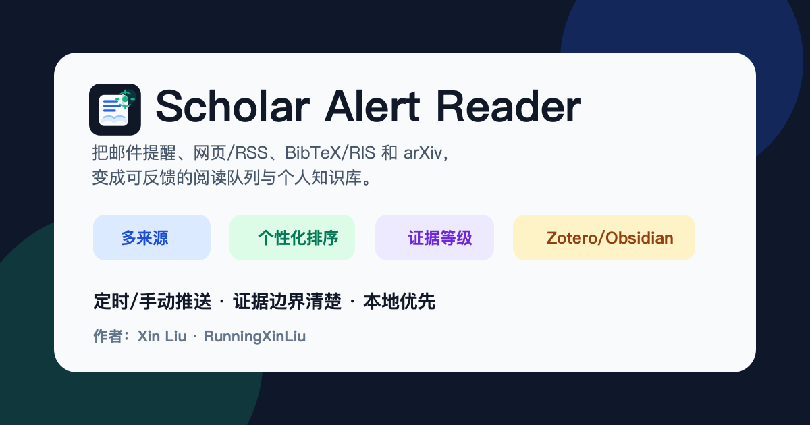
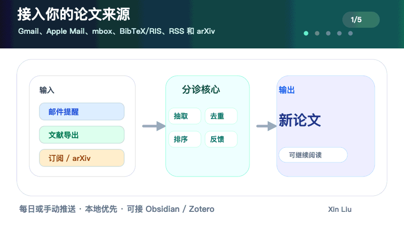
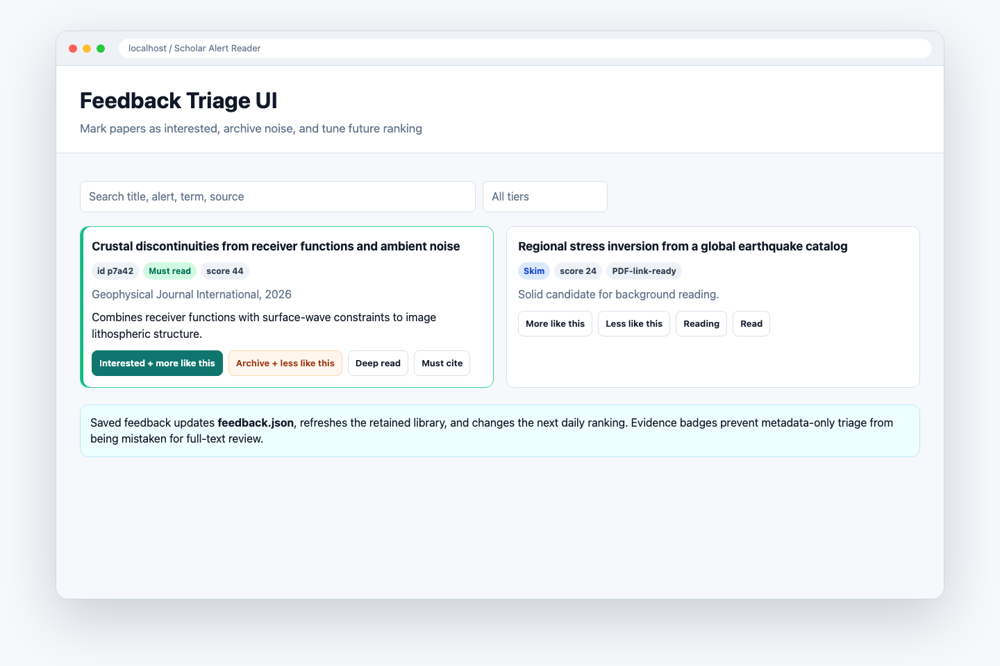
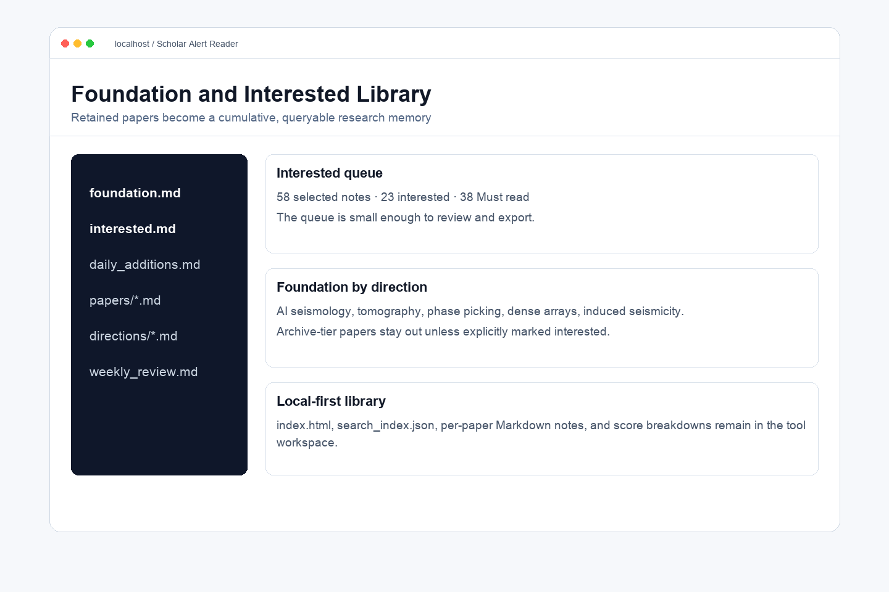
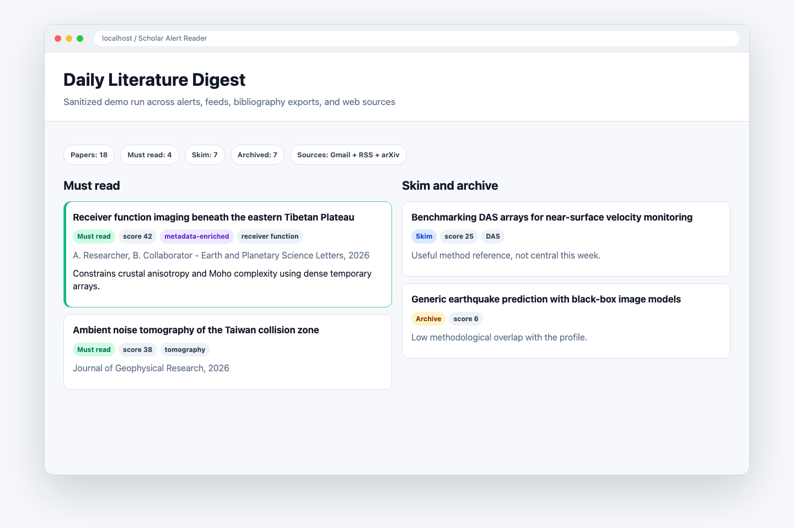
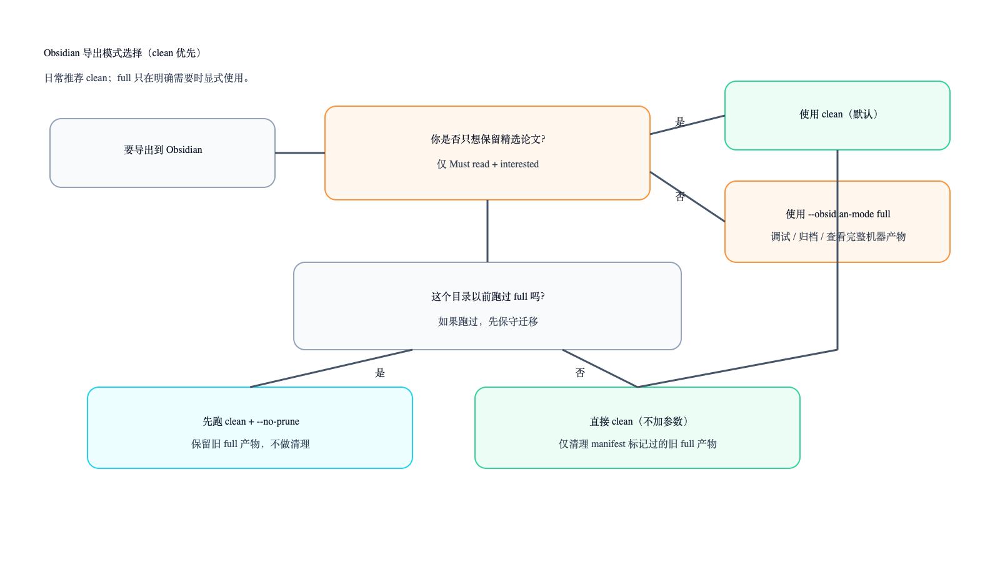
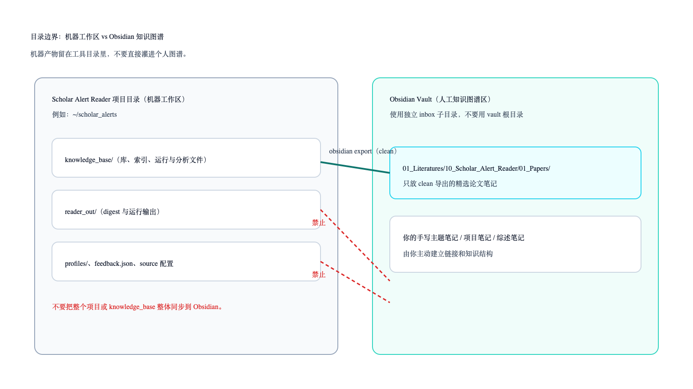
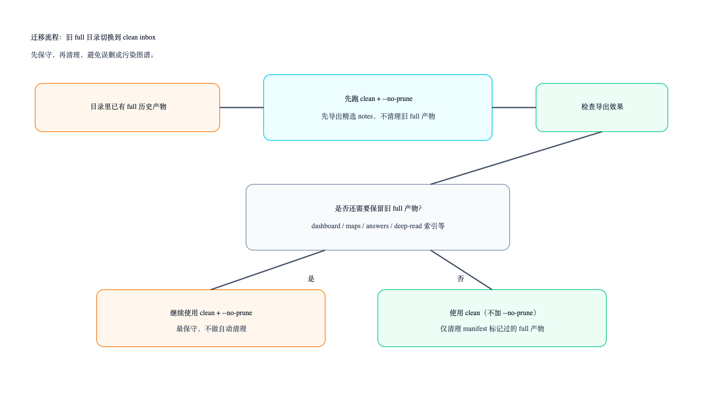

Scholar Alert Reader 中文用户手册
本手册面向第一次使用的人：不要求安装 Codex、Obsidian 或 Zotero。核心目标是把 Google Scholar Alert、RSS/arXiv、BibTeX/RIS 等来源里的论文候选，变成本地可筛选、可反馈、可沉淀的个人文献库。

1. 它解决什么问题
每天的 Scholar Alert 邮件、RSS feed 和文献库导出很容易变成噪音。Scholar Alert Reader 做的是一条本地文献分诊流水线：
论文来源
-> 解析元数据
-> 去重
-> 按研究画像打分
-> 生成 Review Workspace / digest
-> 人工反馈 interested / archive / more-like-this / less-like-this
-> 更新本地 foundation / interested library
-> 可选导出到 Obsidian / Zotero

它不是 Zotero 或 Obsidian 的替代品，也不是全自动阅读全文机器人。更准确地说，它是一个本地、隐私优先、轻量化的文献筛选和文献库构建工具。
2. 你会得到什么
一次运行后，最重要的是这些文件和页面：
| 输出 | 作用 |
|---|---|
Review Workspace |
浏览器里的交互式筛选界面，最适合日常使用 |
reader_out/<mode>/digest.html |
静态 digest，可归档或分享给自己 |
knowledge_base/index.html |
本地轻量文献库首页 |
knowledge_base/papers/*.md |
每篇论文的 Markdown 记录 |
knowledge_base/feedback.json |
你的 interested/archive/more-like-this 等反馈 |
knowledge_base/zotero/*.bib/.ris |
可导入 Zotero 的引用文件 |
| Obsidian clean notes | 可选，只导出精选论文笔记 |

3. 三分钟 demo：不接 Gmail 也能先跑通
先用内置 RSS 样例验证流程。这个 demo 不读私人邮箱、不需要 Obsidian/Zotero，也不需要 Google OAuth。
git clone https://github.com/RunningXinLiu/scholar-alert-reader-skill.git
cd scholar-alert-reader-skill
python3 scripts/scholar_reader.py init-project \
--project-dir ~/scholar_alerts_demo \
--profile-template seismic-imaging
cd ~/scholar_alerts_demo
RSS_SOURCE=examples/sample_feed.atom ./rss_import.sh
PAPERS_JSON=reader_out/rss/papers.json ./serve_reader.sh
浏览器打开后，先看：
- 论文是否按
Must read / Skim / Archive分层。 - 每篇论文是否有推荐理由和证据等级。
- 批量反馈按钮是否能保存。
4. 推荐目录结构
建议把 Scholar Alert Reader 工作区放在 Obsidian 外部：
~/scholar_alerts/
├── profiles/
│ └── research_profile.json
├── reader_out/
│ ├── foundation/
│ └── daily/
├── knowledge_base/
│ ├── index.html
│ ├── library.json
│ ├── feedback.json
│ └── papers/
└── reader.env
如果用 Obsidian，建议只给它一个独立 inbox：
~/Documents/Obsidian Vault/
└── 01_Literatures/
└── 10_Scholar_Alert_Reader/
└── 01_Papers/
不要把整个 knowledge_base/ 拖进 Obsidian。knowledge_base/ 是机器工作区，Obsidian 应该默认只接收精选论文笔记。
5. 配置你的研究画像
研究画像在项目目录里：
profiles/research_profile.json
重点改这些字段：
| 字段 | 作用 |
|---|---|
focus_terms |
你关心的主题，例如 seismic foundation model |
methods |
方法词，例如 phase picking、FWI、self-supervised learning |
regions |
区域、数据集或应用场景 |
semantic_queries |
用一句话描述你真正想找的论文 |
exclude_terms |
经常误报的噪音词 |
tier_thresholds |
Must read / Skim / Archive 的阈值 |
可以用向导快速补充：
./profile_wizard.sh \
--focus "seismic foundation model, earthquake monitoring" \
--method "phase picking, self-supervised learning, uncertainty quantification" \
--region "Tibet, Sichuan Basin, North China"
检查画像是否太宽或太窄：
./profile_doctor.sh
open profiles/profile_doctor.md
6. Gmail 第一次接入
Gmail 是可选的，但它最适合自动读取 Google Scholar Alert。
如果你用 Codex，推荐直接让 Codex 带你走授权流程；它可以检查依赖、检查凭据位置、启动浏览器授权、再跑 source check。你需要亲自完成的只有 Google Cloud 里创建 OAuth client，以及浏览器里点一次授权。
详细步骤见：Gmail 授权中文指南。
你需要在 Google Cloud 做一次配置：
- 创建或选择一个 project。
- 启用 Gmail API。
- 配 OAuth consent screen。
- 如果 app 处于 testing，把自己的 Gmail 加成 test user。
- 创建 OAuth client，类型选
Desktop app。 - 下载 client secret JSON。
建议把凭据放到 repo 外面：
~/.codex/scholar-alert-reader/gmail_credentials.json
第一次授权：
python3 /path/to/scholar-alert-reader-skill/scripts/scholar_reader.py auth-gmail \
--gmail-credentials ~/.codex/scholar-alert-reader/gmail_credentials.json \
--gmail-token ~/.codex/scholar-alert-reader/gmail_token.json
在项目目录 reader.env 里写：
SOURCE=auto
GMAIL_CREDENTIALS=$HOME/.codex/scholar-alert-reader/gmail_credentials.json
GMAIL_TOKEN=$HOME/.codex/scholar-alert-reader/gmail_token.json
检查 Gmail 是否能读：
./source_check.sh --source gmail --live
看到 Gmail live read 成功后，再跑真实任务。
7. 第一次真实运行：建立 foundation
第一次不要只看当天。应该先用已有 Scholar Alert 邮件建立 foundation，形成 baseline：
MODE=foundation SOURCE=gmail ./run_reader.sh
PAPERS_JSON=reader_out/foundation/papers.json ./serve_reader.sh
foundation 的意义：
- 读取已有 alert 邮件。
- 去重，避免同一篇论文从多个 alert 重复出现。
- 按你的 research profile 打分。
- 建立
seen_papers.json，之后 daily 不再反复推旧论文。 - 写入
knowledge_base/，形成本地轻量文献库。

8. 日常运行：daily
foundation 之后，日常运行用 daily。它只显示还没见过的新论文：
SOURCE=gmail ./run_reader.sh
./serve_reader.sh
如果 Papers in digest: 0，不一定是坏了。先看诊断：
open reader_out/daily/digest.html
python3 -m json.tool reader_out/daily/summary.json | sed -n '1,120p'
常见原因：
- Gmail 读到了邮件，但这些论文已经在 foundation/seen state 里。
- 今天没有新的 Scholar Alert。
- Gmail 查询窗口太短。
- OAuth/token 或网络读取失败。
如果只是想重看最近邮件，不想改 foundation：
./review_recent.sh
./serve_recent.sh
9. Review Workspace 怎么用
Review Workspace 是日常最重要的入口。
如果想打开纯中文界面：
UI_LANGUAGE=zh-CN ./serve_reader.sh
如果想打开英文界面：
UI_LANGUAGE=en ./serve_reader.sh
推荐中文 profile 里保留：
{"language": "zh-CN"}
这样 Review Workspace 的界面和打分理由都会尽量保持中文。
建议操作顺序：
- 先用搜索框按 topic、author、venue、method 粗筛。
- 扫
Must read，快速判断是否真相关。 - 对明显有价值的论文设置
Interested。 - 对明显无关的论文设置
Archive。 - 对想让系统以后多推荐的方向勾
More like this。 - 对误报方向勾
Less like this。 - 有想法就写
Personal note。 - 最后统一点
Save selected changes。
每篇论文卡片里应重点看：
- 标题和
Open paper原文链接。 - 期刊/年份/DOI/来源域名。
- evidence level：metadata-only、PDF-link-ready、full-text-backed 等。
- 摘要是否是完整摘要，还是 Scholar Alert 截断片段。
- score reason：为什么它被推荐或降权。
- 你的反馈状态和阅读状态。
10. 批量保存逻辑
当前 UI 不是每点一次就立即写入，而是先累积 pending changes，再统一保存。

一次保存可以同时包含：
Decision: Interested / Archive / Neutral。Priority: Must read / Skim / Archive。Learning signal: More like this / Less like this。Reading status: Reading / Read / Must cite / Background only / Not relevant。Generate report on save: Deep read / Full review / Workup / Review pack。Personal note: append、replace 或 clear。
保存后会更新：
knowledge_base/feedback.jsonknowledge_base/library.jsonknowledge_base/interested.md- per-paper Markdown note
- 后续 daily ranking 的反馈加权
11. 它怎么打分
打分不是黑箱。每篇论文都会有可解释的 score breakdown：
| 组件 | 含义 |
|---|---|
| Topic fit | 和主题词的匹配 |
| Method fit | 和方法词的匹配 |
| Domain/region fit | 和区域、数据集、应用场景的匹配 |
| Semantic fit | 和 semantic_queries 的轻量语义匹配 |
| Author/source signal | 关注作者或来源信号 |
| Feedback similarity | 和你标过 interested/more-like-this 的论文相似 |
| Exclusion penalty | 命中排除词或噪音模式 |
这套解释会出现在 digest、paper note、search index 和 Review Workspace 里。
12. 不用 Gmail 的来源
RSS/Atom：
RSS_SOURCE=examples/sample_feed.atom ./rss_import.sh
PAPERS_JSON=reader_out/rss/papers.json ./serve_reader.sh
arXiv：
ARXIV_QUERY='cat:physics.geo-ph AND all:tomography' ./arxiv_search.sh
PAPERS_JSON=reader_out/arxiv/papers.json ./serve_reader.sh
BibTeX：
cp ~/Downloads/library.bib import.bib
./bibtex_import.sh
PAPERS_JSON=reader_out/bibtex/papers.json ./serve_reader.sh
RIS：
cp ~/Downloads/library.ris import.ris
./ris_import.sh
PAPERS_JSON=reader_out/ris/papers.json ./serve_reader.sh
13. Obsidian：推荐 clean export
Obsidian 是可选的。推荐默认 clean 模式，只把精选论文 note 送进 Obsidian。
./sync_obsidian_vault.sh --obsidian-mode clean
clean 模式只导出：
Must read论文。- 你手动标为
Interested的论文。 - per-paper Markdown notes。
clean 模式不会导出：
- dashboard / index / search_index。
- runs / analysis / answers。
- deep-read / workup / review-pack 报告。
- 自动
[[wikilinks]]。

clean export 的目标是让 Obsidian 成为人的阅读 inbox，而不是机器工作区。

如果你已经把 full 模式导出进 Obsidian，迁移时可以参考：

如果你以前在同一个目录里跑过 full 模式，第一次迁移建议保守一点：
./sync_obsidian_vault.sh --obsidian-mode clean --no-prune
确认没问题后，再决定是否去掉 --no-prune。
详细指南见：
14. Zotero：导出 BibTeX/RIS
Zotero 也是可选的。推荐先只导入 Must-read 或 retained papers，不要一开始把所有 Archive 也塞进去。
./zotero_export.sh
输出通常在：
knowledge_base/zotero/scholar_alert_reader.bib
knowledge_base/zotero/scholar_alert_reader.ris
把 .bib 或 .ris 导入 Zotero 即可。
如果之后在 Zotero 里用 Better BibTeX 导出了库，可以把 citation key、item key 和本地 PDF 路径同步回 Scholar Alert Reader：
ZOTERO_BIBTEX_PATH=~/Downloads/My_Library.bib ./zotero_sync.sh
15. 可选报告：谨慎使用
这些功能可以帮你决定一篇论文是否值得认真读：
Deep readFull reviewWorkupReview packResearch mapAdvice
但要注意 evidence boundary：
- metadata-only：只基于标题、摘要、alert 元数据、profile 和反馈。
- PDF-link-ready：知道 open PDF 或 landing URL，但未必已有全文。
- local-PDF-ready / full-text-backed：本地已有 PDF/text，报告可信度更高。
metadata-only 报告只能用于 triage，不能当作 citation-ready 结论。
16. 隐私和公开分享
可以公开分享 repo、示例数据、demo 截图和手册。不要公开分享真实个人运行产物。
不要上传：
- Gmail credentials。
- Gmail token。
- 原始 mailbox。
profiles/seen_papers.json。knowledge_base/feedback.json。- 真实账号生成的
knowledge_base/。 - PDF/full-text cache。
分享前运行：
./privacy_check.sh
17. 常见问题
daily 没有论文，是不是坏了？
不一定。先看 reader_out/daily/summary.json。如果 seen_papers_filtered_out 很高，说明这些论文已经在 foundation 里见过了。
note 是追加还是覆盖？
Review Workspace 里可以选择 append、replace 或 clear。默认 append 不会覆盖旧笔记。
为什么摘要有时不完整？
Scholar Alert 邮件经常只给截断 snippet。可以在 paper 卡片里用 Fetch abstract 尝试从 OpenAlex/Crossref 补公开摘要。
为什么不自动给 Obsidian 加 wikilinks？
自动 wikilinks 会污染 Obsidian graph。工具默认只写 tags 和普通 Markdown 链接，让真正的知识连接由你读完后手动建立。
没有 Codex 能不能用？
可以。核心是 Python CLI 和项目目录里的脚本。Codex 只是更方便的配置和维护入口。
18. 推荐日常流程
cd ~/scholar_alerts
SOURCE=gmail ./run_reader.sh
./serve_reader.sh
每天做三件事：
- 看
Must read，扫一眼Skim。 - 给 5-10 篇文章做明确反馈。
- 每周导出一次 Obsidian clean notes 和 Zotero BibTeX/RIS。
推荐节奏：
每天：Gmail/RSS/arXiv -> Review Workspace -> feedback
每周：clean export -> Obsidian inbox；Must-read BibTeX/RIS -> Zotero
每月：profile-doctor / profile-tune，调整研究画像
19. 下一步
如果你只是想试试：
RSS_SOURCE=examples/sample_feed.atom ./rss_import.sh
PAPERS_JSON=reader_out/rss/papers.json ./serve_reader.sh
如果你要真实使用：
MODE=foundation SOURCE=gmail ./run_reader.sh
PAPERS_JSON=reader_out/foundation/papers.json ./serve_reader.sh
然后从 Review Workspace 开始筛选。